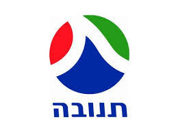
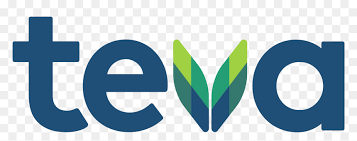
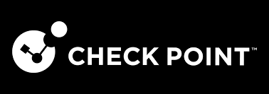
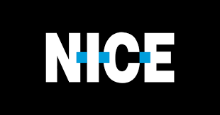

חברות ישראליות
| שם חברה | מנכ"ל | מידע | לוגו |
|---|---|---|---|
| תנובה | גדי קוניא |
תנובה היא אחת מחברות המזון הגדולות והוותיקות בישראל, שנוסדה בשנת 1926 כאגודה שיתופית של קיבוצים ומושבים. החברה מתמחה בייצור ושיווק מוצרי חלב, בשר, ירקות קפואים ומוצרי מזון נוספים, והיא מהווה חלק מרכזי בתעשיית המזון המקומית. תנובה נחשבת לסמל ישראלי מוכר, עם מותגים שהפכו לחלק בלתי נפרד מהתרבות הקולינרית בארץ, והיא ממשיכה לפעול כיום כחברה מסחרית מובילה בשוק המזון הישראלי. |
 |
| טבע תעשיות פרמצבטיות בע"מ | קארה ביורן ג'נסן |
טבע תעשיות פרמצבטיות בע"מ היא חברת תרופות ישראלית בינלאומית, שנוסדה בשנת 1901 ונחשבת לאחת מחברות התרופות הגנריות הגדולות בעולם. החברה מתמחה בפיתוח, ייצור ושיווק תרופות גנריות לצד תרופות ייחודיות בתחומים כמו מערכת העצבים המרכזית, אונקולוגיה ונשימה. טבע היא שחקנית מרכזית בשוק התרופות הגלובלי, עם פעילות ביותר ממאה מדינות, והיא תרמה רבות למיצוב ישראל כמרכז חדשנות בתחום הפרמצבטיקה. |
 |
| צ'ק פוינט טכנולוגיות תוכנה | נדב זפריר |
צ'ק פוינט טכנולוגיות תוכנה בע"מ היא חברת סייבר ישראלית בינלאומית, שנוסדה בשנת 1993 ומרכזה בתל אביב. החברה מתמחה בפיתוח פתרונות אבטחת מידע והגנה מפני איומי סייבר, כולל חומות אש (firewalls), מערכות למניעת חדירה, הגנה על נקודות קצה, אבטחת ענן ואבטחת רשתות. מוצרי צ'ק פוינט משמשים ארגונים, ממשלות וחברות בכל העולם, והיא נחשבת לאחת מהחברות המובילות בתחום אבטחת הסייבר הגלובלי. |
 |
| נייס בע"מ | ברק אילם |
נייס בע"מ (NICE Ltd) היא חברת תוכנה ישראלית בינלאומית, שנוסדה בשנת 1986 ומרכזה ברעננה. החברה מתמחה בפיתוח פתרונות לניהול חוויית לקוח (CX), אנליטיקה עסקית, אוטומציה, ואבטחת מידע. מוצרי נייס כוללים מערכות להקלטת שיחות, ניתוח נתונים בזמן אמת, מערכות לניהול מרכזי שירות לקוחות, וכן פתרונות מבוססי ענן המיועדים לשיפור תהליכים עסקיים ולייעול חוויית המשתמש. נייס נחשבת לאחת מהחברות המובילות בעולם בתחומה, עם לקוחות ביותר מ־150 מדינות, והיא נסחרת בנאסד"ק תחת הסימול NICE. |
 |